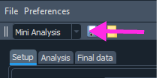
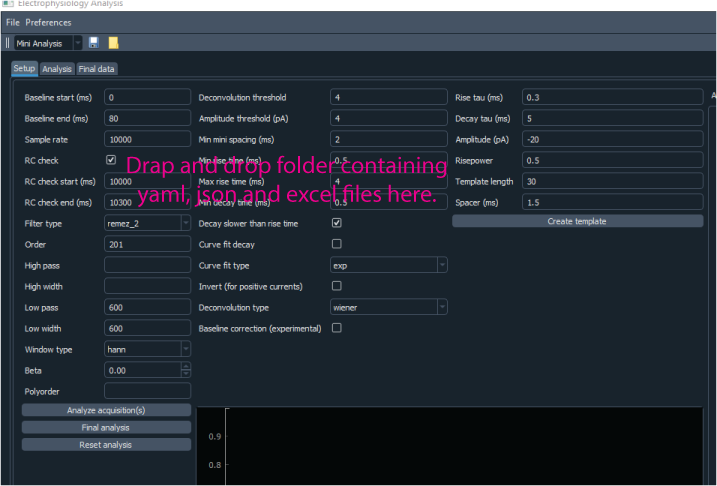

Basic GUI usage#
To start the GUI just make sure your environment has clampsuite installed and run
python -m clampsuite in the command prompt/terminal.
Choosing the module#
The GUI consists of four different modules: Mini analysis, oEPSC, current clamp and filtering. The specific module can be choosen by using the drop-down menu in the top left corner of the interface. Each module has a Setup, Analysis, and Final data tab. All of the modules make use of “Docks” that make it easy to resize the nested windows to your choosing.
Loading acquisitions for analysis#
Each module features drag and drop loading. To drag and drop .mat files for first time analysis. Just select your files and drag and drop onto the acquisition area of within each module.

Each module has three main buttons: Analyze acquisition(s), Final analysis and Reset analysis.
Analyze acquisition(s): Starts the analysis. Once the data is finished analyzing the / the Analysis tab will be automatically opened. If you want to restart the analysis just / click on the button and all the analysis will be cleared and rerun.
Final analysis: Runs the final analysis. There is final analysis button on the / Setup and Analysis tabs. They both compile and show the final data in the Final Data tab.
Reset analysis: This resets the analysis and removes the acquisitions but keeps the / settings. All plots and data are cleared.
The acquisition data is saved into JSON files since these files are portable and can be opened in most programming languages. The settings are saved as YAML files. The final data in the tables are saved to excel files. It is recommended that you save each analysis into a separate folder since it is easier to load the data back into ClampSuite.
Saving data#
To save data just use Ctrl/Cmd + S or under file select save. Just put enter the prefix for you file name and the ClampSuite will take care of the rest. I recommend saving the file into a empty folder since the you need to have the data in a folder to load it back into the program. If you have analyzed data but have not run the final analysis then JSON files for acquisition and a YAML file. If you have run the final analysis then the data will there will also be an excel file saved.
Loading previously analyzed data#
Data that has been previously analyzed can be load back into the program by dragging and dropping a folder containing the data into ClampSuite. The folder can be dropped anywhere but the Acquisitions area where acquisitions are loaded.
Selecting display preferences#
Currently none of the display preferences are saved. This is a work in progress. The colors for the plots were chosen because they are colorblind friendly and stick out enough from both the dark and light settings. You can checkout a program called Color Oracle to see what the program looks like in when simulating different colorblindnesses.